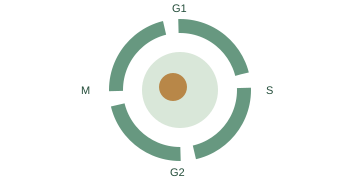
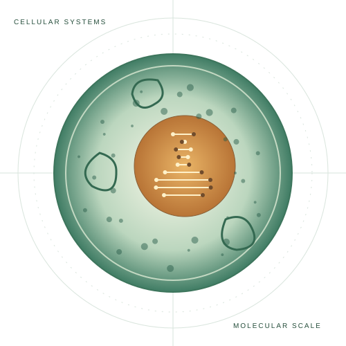
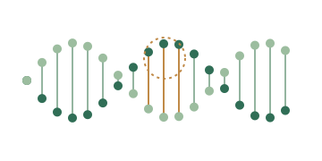
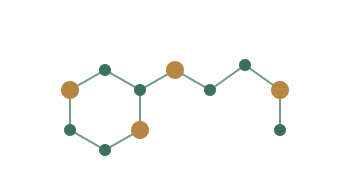
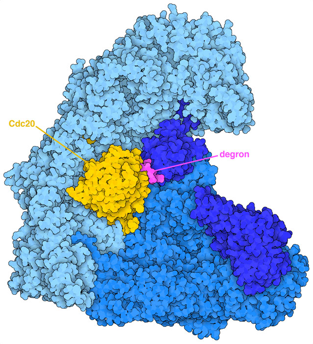
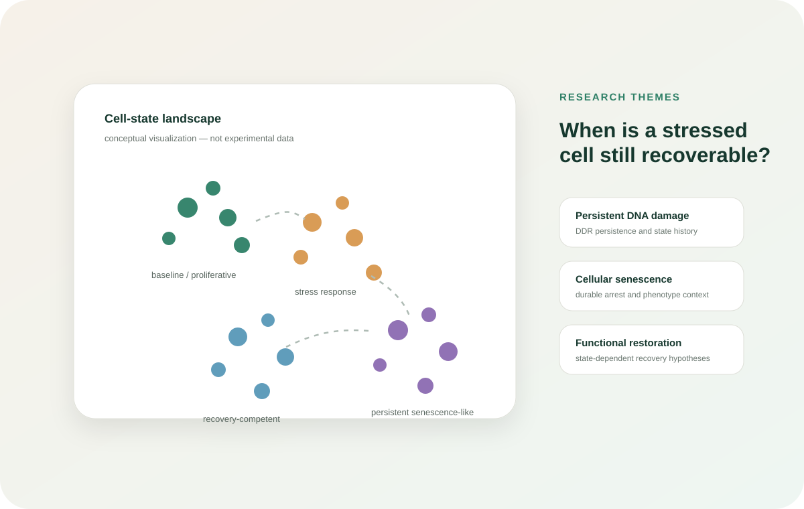

Cancer & Cell Cycle Biology
Mitotic regulation, APC/C–CDC20 biology, cancer treatment response, and vulnerabilities created by disrupted cell cycle control.
Cancer Biology • Aging • Therapeutic Discovery
Pharmacy researcher working at the interface of mechanistic biology, computational analysis, and translational pharmacology.
I study how cellular control systems fail in cancer and persistent stress states, and how computational and pharmaceutical reasoning can help identify interventions worth testing experimentally.

Conceptual illustration
Current: APC/C–CDC20 small molecule prioritization and translational cancer research
Training: B.Pharm., Universitas Sebelas Maret · Expected Dec 2026
Research focus
My current work connects cancer cell cycle biology, persistent cellular stress, transcriptomics, and computational drug discovery. Pharmacy training keeps the translational question close: not only whether a mechanism is interesting, but whether an intervention is chemically, pharmacologically, and experimentally workable.

Mitotic regulation, APC/C–CDC20 biology, cancer treatment response, and vulnerabilities created by disrupted cell cycle control.

DNA damage responses, senescence, durable stress states, and the possibility that recovery competence depends on a cell's molecular history.

Docking, ADMET prediction, cheminformatics, pharmaceutical developability, transcriptomics, and evidence guided compound prioritization.
Research internship · Aug 2026 to present
Yeast Biochemistry and Genetics Laboratory · Taiwan
My internship work focuses on prioritizing small molecules identified from APC/C docking screens. I integrate site level docking evidence with ligand efficiency sensitivity analysis, ADMET predictions, assay exposure feasibility, chemical liabilities, pharmaceutical developability, and evidence confidence.
I also develop and audit structured candidate registries and decision frameworks designed to connect computational screening results with downstream testing in MDA-MB-231 and RPE-1 cell systems.


Selected projects
Public descriptions are intentionally high level. Unpublished compound rankings, internal datasets, and collaborator confidential analyses are not displayed.

Aging biology · conceptual framework
A framework asking whether persistently stressed cells differ in their capacity for safe functional restoration, and whether those differences can be predicted from measurable state features.
Reproducible Python and R analysis of 45 RNA sequencing libraries spanning control, therapy induced senescence, and repopulation conditions, including transcriptomic aging scores and cell cycle associations.
Protocol and evidence framework development for distinguishing persistent DNA damage responses from cellular senescence across public datasets and identifying shared and cell type specific transcriptional programs.
Integrated phytochemical curation, target and pathway mapping, molecular docking, ADMET and drug likeness assessment, and molecular dynamics to prioritize mechanistically plausible leads for non small cell lung cancer.
Investigation of phytosteroid rich extracts using Soxhlet extraction, purification and fractionation, topical formulation, and in vivo evaluation in a mouse model of induced atopic dermatitis.
Peer reviewed publications
Ainurofiq A., Maharani E. P., Putranti I. N. D., Wijaya N. K., Putri R. C. A., Maharani V., & Ahamed M. T. · Journal of Environmental Nanotechnology, 15(1), 340–348.
Ahamed M. T., Ramadhana I. H. A., Purnama M. F., & Ainurofiq A. · Advanced Drug Sciences, 1(1), e000004.
Rizvi H. H., Arshad M. M., Sadia S. H., Ali I., Ahamed M. T., & Bibi A. · Journal of Medical & Health Sciences Review, 2(3), 4950–4962.
Safa Y. F. et al., including Ahamed M. T. · Jurnal Pengabdian Masyarakat Bangsa, 3(5), 2651–2666.
Work in development
APC/C–CDC20 translational tractability review
Target biology, pharmacological strategies, translational barriers, and evidence needed for clinical relevance.
Targeting Tumor Intrinsic Oncogenic Signaling and Angiogenesis in NSCLC
Integrated computational prioritization of Phyllanthus emblica phytochemicals.
Beyond γH2AX: Defining Persistent DNA Damage Response in Cellular Senescence
Distinguishing acute DDR, persistent DDR, and cellular senescence experimentally.
I am a Bachelor of Pharmacy student at Universitas Sebelas Maret and a research intern at Chang Gung University. My experience spans computational pharmacology, natural product drug discovery, cancer cell cycle research, comparative transcriptomics, and cellular senescence.
A recurring theme in my work is moving from large or noisy evidence spaces toward decisions that can actually be tested. I am especially interested in how genomic and metabolic stress produces persistent or reversible cell states, and how those states might be manipulated for cancer therapy and healthy aging.
Selected skills
Contact
I am particularly interested in cancer biology, aging, cellular stress states, computational drug discovery, and translational therapeutic research.